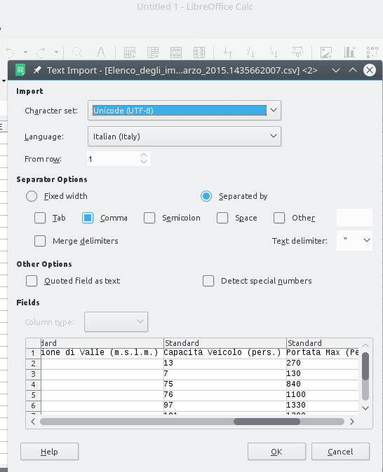

Formati dati 2 - CSV
Scarica zip esercizi
Ci possono essere vari formati per i file tabulari, tra cui sicuramente conoscerai gli Excel (.xls o .xslx). Peccato che se vuoi processare dati programmaticamente, faresti meglio ad evitarli e preferire se possibile i file CSV, letteralmente ‘Comma separated Value’. Per capire il perchè, quando hai tempo potresti guardare questo tutorial in cui si spiega a produttori di dati (in questo caso,
dipendenti pubblici) come trasformare Excel in CSV, evidenziando i vari grattacapi che un Excel può presentare a chi poi riusa i dati.
Oggi proveremo ad aprire qualche CSV, prendendo in considerazione i possibili problemi che possono insorgere. I CSV non sono la panacea per tutti i mali, ma offrono maggiore controllo sulla lettura e tipicamente se saltano fuori errori di conversione è perchè siamo stati noi a sbagliare, e non perchè la libreria di lettura ha magari deciso da sola di scambiare i giorni con i mesi nelle date.
Perchè scorrere un CSV ?
Per caricare e processare CSV esistono già librerie molto potenti ed intuitive come Pandas in Python o i dataframe di R, che forse avrai già visto. Oggi invece caricheremo i CSV usando il mezzo più semplice possibile, che è la lettura riga per riga, più o meno come fatto nella prima parte del tutorial. Non bisogna pensare che questo metodo sia primitivo o stupido, a seconda della situazione può salvare la giornata. Come mai? Dato che alcuni file potenzialmente potrebbero occupare terabyte, e nei moderni laptop di solito abbiamo mediamente solo 4 Gigabyte di RAM, che è la memoria dove Python mette le variabili, le funzioni di base di Python per leggere file evitano di caricare tutto in RAM. Tipicamente invece un file viene scorso un po’ alla volta, mettendo in RAM solo una riga alla volta.
DOMANDA 2.1: se vogliamo sapere se un certo file da 100 terabyte contiene almeno 3 milioni di righe in cui è presente la parola ‘ciao’, dobbiamo mettere in RAM contemporaneamente tutte le righe?
Mostra rispostaDOMANDA 2.2: E se volessimo partendo da un file da 100 terabyte crearne un’altro con gli stessi contenuti del primo file a cui a tutte le righe è aggiunta la parola ‘ciao’ alla fine, dovremmo mettere in RAM contemporaneamente tutte le righe del primo file? E quelle del secondo ?
Mostra rispostaCSV di esempio
Cominciamo con dei CSV artificiali di esempio, sul modello di esercizi già fatti nella introduzione
Per iniziare, vedremo il CSV esempio-1.csv che trovi nella stessa cartella di questo foglio Jupyter. Riportiamo qui il contenuto del file:
animale,anni
cane,12
gatto,14
pellicano,30
scoiattolo,6
aquila,25
Notiamo subito che il CSV è più strutturato dei file visti nella sezione precedente
la prima linea sono i nomi delle colonne, separati da virgole (comma in inglese):
animale, anniI campi nelle righe successive sono pure separati da virgole
,:cane, 12non ci sono spazi dopo le virgole
Proveremo ora ad importare questo file in Python:
[1]:
import csv
with open('esempio-1.csv', encoding='utf-8', newline='') as f:
# creiamo un oggetto 'lettore' che pescherà righe dal file
lettore = csv.reader(f, delimiter=',')
# 'lettore' è un oggetto cosiddetto 'iterabile', cioè se usato in un for produce una
# sequenza di righe dal csv
# NOTA: qui ogni riga del file viene convertita in una una lista di stringhe Python!
for riga in lettore:
print('Abbiamo appena letto una riga!')
print(riga) # stamperà la variabile 'riga', che è una lista di stringhe
print('') # stampa una stringa vuota, per separare in verticale
Abbiamo appena letto una riga!
['animale', 'anni']
Abbiamo appena letto una riga!
['cane', '12']
Abbiamo appena letto una riga!
['gatto', '14']
Abbiamo appena letto una riga!
['pellicano', '30']
Abbiamo appena letto una riga!
['scoiattolo', '6']
Abbiamo appena letto una riga!
['aquila', '25']
Notiamo subito dall’output della print che viene stampato il file di esempio, ma ci sono delle parentesi quadre ( ‘[]’ ). Cosa significano? Quelle che abbiamo stampato sono una liste di stringhe.
Analizziamo meglio quanto fatto:
[2]:
import csv
Python è fornito nativamente di un modulo per il trattamento dei csv, col nome intuitivo csv. Con questa istruzione, abbiamo appena caricato questo modulo.
Cosa succede dopo ? Come già fatto per i file a linee in precedenza, apriamo il file in un blocco with:
[3]:
with open('esempio-1.csv', encoding='utf-8', newline='') as f:
lettore = csv.reader(f, delimiter=',')
for riga in lettore:
print(riga)
Per adesso ignora il newline='' e nota che come prima abbiamo specificato l’encoding
Una volta aperto il file, nella riga
lettore = csv.reader(f, delimiter=',')
chiediamo al modulo csv di crearci un oggetto lettore chiamato lettore per il nostro file, dicendo a Python che il delimitatore per i campi sono le virgole.
NOTA: lettore è il nome di una variabile che stiamo creando, potremmo dare un nome qualunque.
Questo oggetto lettore può essere sfruttato come una specie di generatore di righe usando un ciclo for.
for riga in lettore:
print(riga)
Nel ciclo for sfruttiamo l’oggetto lettore per iterare nella lettura del file, producendo ad ogni iterazione una riga che chiamiamo riga (ma potrebbe essere un qualunque nome a nostro piacimento). Ad ogni iterazione, la variabile riga viene stampata.
Se guardi bene le stampe delle prime liste, vedrai che ogni volta a ogni riga viene assegnata una sola lista Python. La lista contiene tanti elementi quanti campi ci sono nel CSV.
Esercizio - riscrivi
✪ Riscrivi nella cella qua sotto le istruzioni per leggere e stampare il csv, facendo come sempre attenzione all’indentazione:
Mostra soluzione[4]:
# scrivi qui
Esercizio - listona
✪✪ Prova a mettere in una variabile listona una lista contenente tutte le righe estratte dal file, che quindi sarà una lista di liste che dovrebbe apparire così.
[['animale', ' anni'],
['cane', '12'],
['gatto', '14'],
['pellicano', '30'],
['scoiattolo', '6'],
['aquila', '25']]
SUGGERIMENTO: Comincia creando una lista vuota e poi aggiungendo elementi con il metodo .append
[5]:
# scrivi qui
Esercizio - ristrutturiamo
✪✪ Forse avrai notato che i numeri nella liste sono rappresentati come stringhe tipo '12' (nota gli apici), invece che come numeri interi Python (rappresentati senza apici), 12:
Abbiamo appena letto una riga!
['cane', '12']
Quindi, leggendo il file e usando dei normali cicli for, prova a creare nua variabile listona formata come questa, che
ha solo i dati, la riga con le intestazioni non è presente
i numeri sono rappresentati propriamente come interi
[['cane', 12],
['gatto', 14],
['pellicano', 30],
['scoiattolo', 6],
['aquila', 25]]
SUGGERIMENTO 1: per saltare una riga puoi usare l’istruzione next(lettore)
SUGGERIMENTO 2: per convertire una stringa in un intero, si può usare per es. int('25')
[6]:
# scrivi qui
Cos’è esattamente lettore ?
Abbiamo detto che lettore genera una sequenza di righe, ed è iterabile. Nel ciclo for, ad ogni ciclo gli chiediamo di leggere una nuova riga, che viene messa nella variabile riga. Quindi possiamo chiederci, cosa succede se stampiamo direttamente lettore, senza usare nessun for ? Vedremo una bella lista o qualcos’altro? Proviamo:
[7]:
import csv
with open('esempio-1.csv', encoding='utf-8', newline='') as f:
lettore = csv.reader(f, delimiter=',')
print(lettore)
<_csv.reader object at 0x7ff4b0267d50>
Quello che vediamo è piuttosto deludente.
Esercizio - conversione rapida a lista
✪ Se hai visto il foglio sulle sequenze, a un certo punto ci siamo trovati nella stessa situazione, quando abbiamo provato a stampare un range. Che potremmo fare per risolvere la situazione?
Mostra soluzione[8]:
# scrivi qui
[['animale', 'anni'], ['cane', '12'], ['gatto', '14'], ['pellicano', '30'], ['scoiattolo', '6'], ['aquila', '25']]
Consumare un file
Non tutte le sequenze sono uguali. Da quello che hai visto finora, in Python scorrere un file assomiglia molto a scorrere una lista. Che è molto comodo, ma bisogna stare attenti ad alcune cose. Dato che i file potenzialmente potrebbero occupare terabyte, le funzioni di base di Python per leggere file evitano di caricarli tutti in memoria e tipicamente il file viene scorso un po’ alla volta. Ma se il file non viene caricato tutto nell’ambiente di Python in un colpo solo, cosa succede se proviamo
a scorrerlo due volte all’interno della stessa with? E se proviamo ad usarlo fuori dal with, che succede? Guarda i prossimi esercizi per scoprirlo.
Esercizio - due print
✪ Prendendo la soluzione all’esercizio di prima, prova a chiamare print(list(lettore)) due volte, in sequenza. Ottieni la stessa stampa entrambe le volte?
[9]:
# scrivi qui
Esercizio - print a sinistra
✪ Prendendo la soluzione all’esercizio di prima (usando una sola print), prova qua sotto a spostare la print tutta a sinistra (eliminando gli spazi). Funziona ancora?
Mostra soluzione[10]:
# scrivi qui
Esercizio - list comprehension
✪✪✪ Adesso che abbiamo capito un po’ che tipo di bestia è lettore, proviamo adesso a produrre questo risultato come già fatto in precedenza, ma usando una list comprehension invece del ciclo for:
[['cane', 12],
['gatto', 14],
['pellicano', 30],
['scoiattolo', 6],
['aquila', 25]]
Se riesci, prova anche a scrivere tutta la trasformazione per creare
listonain una sola riga, usando la funzione itertools.islice per saltare l’intestazione (per es.itertools.islice(['A', 'B', 'C', 'D', 'E'], 2, None)salta i primi due elementi e produce la sequenza C D E F G - nel nostro caso gli elementi prodotti dalettoresarebbero righe)
[11]:
import csv
import itertools
with open('esempio-1.csv', encoding='utf-8', newline='') as f:
lettore = csv.reader(f, delimiter=',')
# scrivi qui
Esercizio - I cani camminano
✪ Crea un file mio-esempio.csv nella stessa cartella dove c’è questo foglio Jupyter, copiandoci dentro il contenuto del file esempio-1.csv. Poi aggiungici una colonna descrizione, ricordandoti di separare il nome di colonna dalla precedente con una virgola. Come valori della colonna, metti nelle righe successive stringhe tipo i cani camminano, i pellicani volano a seconda dell’animale, etc ricordandoti di separarle dagli anni usando una virgola, così:
cane,12,i cani camminano
Dopo di che, copia e incolla qua sotto il codice Python per caricare il file, mettendo il nome di file mio-esempio.csv, e prova a caricare il tutto, tanto per vedere se funziona:
[12]:
# scrivi qui
Esercizio - i cani volano
✪ Non tutti i CSV sono strutturati in modo uguale, e a volte quando scriviamo i csv o li importiamo alcuni accorgimenti sono necessari. Cominciamo a vedere che problemi potrebbero sorgere:
Nel file, prova a mettere uno o due spazi prima dei numeri, per es scrivi come sotto e guarda che succede:
cane, 12,i cani volano
DOMANDA 2.11.1: Lo spazio viene importato o no?
Mostra rispostaDOMANDA 2.11.2: se convertiamo ad intero, lo spazio è un problema?
Mostra rispostaDOMANDA Modifica solo la descrizione dei cani da i cani camminano a i cani camminano, ma non volano e prova a rieseguire la cella che legge il file. Che succede?
DOMANDA: Per ovviare al problema precedente, una soluzione che si può adottare nei CSV è circondare stringhe contenti virgole da doppi apici, così: "i cani camminano, ma non volano". Funziona ?
Leggere come dizionari
Invece di leggere un CSV come se fosse una sequenza di liste, potrebbe essere più conveniente dire a Python di interpretare le linee come se fossero dizionari.
Tramite l’oggetto csv.DictReader sarai in grado di recuperare dizionari, in cui le chiavi saranno i nomi dei campi presi dall’intestazione.
NOTA: diverse versioni di Python producono diversi dizionari:
\(<\) 3.6:
dict3.6, 3.7:
OrderedDict\(\geq\) 3.8:
dict
La 3.8 è ritornata al vecchio dict perchè nella sua nuova implementazione dei dizionari l’ordine delle chiavi è garantito, quindi sarà consistente con quello degli header del CSV.
[13]:
import csv
with open('esempio-1.csv', encoding='utf-8', newline='') as f:
lettore = csv.DictReader(f, delimiter=',') # Nota adesso usiamo un DictReader
for diz in lettore:
print(diz)
OrderedDict([('animale', 'cane'), ('anni', '12')])
OrderedDict([('animale', 'gatto'), ('anni', '14')])
OrderedDict([('animale', 'pellicano'), ('anni', '30')])
OrderedDict([('animale', 'scoiattolo'), ('anni', '6')])
OrderedDict([('animale', 'aquila'), ('anni', '25')])
Scrivere un CSV
Puoi facilmente creare un CSV instanziando un oggetto writer:
ATTENZIONE: ASSICURATI DI SCRIVERE NEL FILE GIUSTO!
Se non stai più che attento ai nomi dei file, rischi di cancellare dati !!!
[14]:
import csv
# Per scrivere, RICORDATI di specificare l'opzione 'w'
# ATTENZIONE: 'w' rimpiazza *completamente* eventuali file esistenti!
with open('file-scritto.csv', 'w', encoding='utf-8', newline='') as csv_da_scrivere:
scrittore = csv.writer(csv_da_scrivere, delimiter=',')
scrittore.writerow(['Questo', 'è', 'uno header'])
scrittore.writerow(['Qualche', 'dato', 'di esempio'])
scrittore.writerow(['altri', 'dati', 'di esempio'])
Leggere e scrivere un CSV
Per scrivere un nuovo CSV prendendo dati da un CSV esistente, potresti annidare un with per la lettura dentro uno per la scrittura:
ATTENZIONE A SCAMBIARE I NOMI DEI FILE!
Quando leggiamo e scriviamo è facile commettere un errore e sovrascrivere accidentalmente i nostri preziosi dati.
Per evitare problemi:
usa nomi espliciti sia per i file di output (es: esempio-1-arricchito.csv) che per gli handle (es:
csv_da_scrivere)fai una copia di backup dei dati da leggere
controlla sempre prima di eseguire il codice !
[15]:
import csv
# Per scrivere, RICORDATI di specificare l'opzione 'w'
# ATTENZIONE: 'w' rimpiazza *completamente* eventuali file esistenti!
# ATTENZIONE: l'handle *esterno* l'abbiamo chiamato csv_da_scrivere
with open('esempio-1-arricchito.csv', 'w', encoding='utf-8', newline='') as csv_da_scrivere:
scrittore = csv.writer(csv_da_scrivere, delimiter=',')
# Nota come questo 'with' sia dentro quello esterno
# ATTENZIONE: l'handle *interno* l'abbiamo chiamato csv_da_leggere
with open('esempio-1.csv', encoding='utf-8', newline='') as csv_da_leggere:
lettore = csv.reader(csv_da_leggere, delimiter=',')
for riga in lettore:
riga.append("qualcos'altro")
scrittore.writerow(riga)
Vediamo se il file è stato effettivamente scritto provando a leggerlo:
[16]:
with open('esempio-1-arricchito.csv', encoding='utf-8', newline='') as csv_da_leggere:
lettore = csv.reader(csv_da_leggere, delimiter=',')
for riga in lettore:
print(riga)
['animale', 'anni', "qualcos'altro"]
['cane', '12', "qualcos'altro"]
['gatto', '14', "qualcos'altro"]
['pellicano', '30', "qualcos'altro"]
['scoiattolo', '6', "qualcos'altro"]
['aquila', '25', "qualcos'altro"]
Esercizio - CSV Impianti funiviari
Di solito sui cataloghi open data come il popolare CKAN (es dati.trentino.it, data.gov.uk, European data portal) i file sono organizzati in dataset, che sono collezioni di risorse: ogni risorsa contiene direttamente un file dentro al catalogo (tipicamente CSV, JSON o XML) oppure un link al file vero e proprio su un server di proprietà dell’organizzazione che ha creato i dati.
Il primo dataset che guarderemo sarà ‘Impianti funiviari in esercizio pubblico’:
http://dati.trentino.it/dataset/impianti-funiviari-in-esercizio-pubblico
Qua troverai alcune informazioni generiche sul dataset, di importante nota la licenza che è Creative Commons Zero v1.0, praticamente è la licenza più permissiva che si possa trovare, e garantisce la certezza di poter riusare i dati senza alcun vincolo.
All’interno della pagina del dataset, è presente una risorsa chiamata “Elenco degli impianti bifuni con movimento a va e vieni”:
Alla pagina della risorsa, troviamo un link ad un file CSV (ci si arriva anche cliccando sul bottone blu ‘Vai alla risorsa’):
Se apro il CSV in una tab di Firefox, sul mio computer che ha sistema operativo Linux, vedo una cosa del genere:
Denominazione impianto,Codice S.I.F.,Comune,Esercente,Data Primo collaudo,Data Ultimo Collaudo,Lunghezza Inclinata (m),Dislivello (m),Stazione di Valle (m.s.l.m.),Capacità Veicolo (pers.),Portata Max (Pers/h),Opere Paravalanghe ,Servizio
Trento - Sardagna,B007e,Trento,Soc. Trentino Trasporti Esercizio,08-apr-64,18-mar-03,1157,400,200,13,270,#,annuale
Mezzocorona - Monte,B008e,Mezzocorona,Soc.Fun. Monte Mezzocorona,22-dic-04,22-dic-04,933,623,267,7,130,si (frane),annuale
Alba - Ciampac,B014m,Canazei,Soc.Fun. Ciampac e Contrin,20-mag-75,27-nov-14,1902,658,1496,75,840,#,bistagionale
Pecol - Col dei Rossi,B017m,Canazei,S.I.T.C.,09-feb-79,05-dic-97,1313,450,1932,76,1100,si,bistagionale
P. S.Pellegrino - Col Margherita,B022m,Moena,Soc.Fun. Col Margherita,11-mar-82,14-dic-01,1395,639,1874,97,1330,#,bistagionale
Vigo di Fassa - Ciampedie,B026m,Vigo di Fassa,Soc.Catinaccio Impianti a Fune,24-lug-85,23-giu-05,1523,570,1431,101,1300,#,bistagionale
Campitello - Col Rodella ,B027m,Canazei,S.I.T.C.,06-dic-86,07-lug-05,2472,984,1411,126,1160,si,bistagionale
Passo Pordoi - Sass Pordoi,B028m,Canazei,S.I.T.C.,23-mag-95,23-mag-95,1487,708,2240,65,820,#,bistagionale
Col Verde - Rosetta,B029b,Tonadico,Imprese e Territorio Soc. Cons. s.r.l.,21-lug-04,21-lug-04,1336,674,1935,41,420,si + M.G.,bistagionale
Tarlenta - Rifugio Mantova,B030g,Peio,Soc.Fun. Peio,30-dic-10,30-dic-10,2856,992,2001,101,860,si + frane,bistagionale
Come atteso, vediamo dei campi separati da virgole.
Problema: caratteri sbagliati ??
Si vede subito un problema nella prima riga delle intestazioni, alla colonna Capacità Veicolo (pers.). Pare che il file abbia la ‘à’ accentata sbagliata. Ma è davvero un problema del file? Vi dico subito di no. Probabilmente, è il server che non sta dicendo a Firefox quale è il giusto encoding per il file. Firefox non ha capacità di divinazione, e fa solo il suo meglio per mostrare il CSV basandosi sulle informazioni che ha, che possono essere limitate e/o addirittura incorrette. Il mondo
non è mai come lo vorremmo…
Esercizio - Aprire in un foglio di calcolo
✪ Scarica il CSV, e prova ad aprirlo in Excel, e / o in LibreOffice Calc. Vedi la à accentata corretta? Se no, prova ad impostare l’encoding (per es. in Calc si chiama ‘Character set’) a ‘Unicode (UTF-8)’
ATTENZIONE SE USI Excel!
Facendo direttamente File->Apri in Excel, probabilmente Excel cercherà di immaginarsi da solo come intabellare il CSV, e sbaglierà metterà tutto le righe in una colonna. Per ovviare al problema, dobbiamo dire ad Excel di mostrare un pannello per chiederci come vogliamo aprire il CSV, facendo così:
In Excel vecchi, cerca
File-> ImportaIn Excel recenti, clicca la scheda
Datie poi selezionaDa testo. Per ulteriori riferimenti su Excel, vedere guida di Salvatore Aranzulla
NOTA: Casomai il file non fosse disponibile, nella cartella dove c’è questo notebook Jupyter troverai anche lo stesso file rinominato in impianti-bifuni.csv

Poi dovrebbe risultare più o meno una tabella come questa:

Importare in Python
Adesso che abbiamo capito due cose sull’encoding, proviamo ad importare il file in Python (abbiamo rinominato il file originale nel più corto impianti-bifuni.csv):
[17]:
import csv
with open('impianti-bifuni.csv', encoding='utf-8', newline='') as f:
# creiamo un oggetto 'lettore' che pescherà righe dal file
lettore = csv.reader(f, delimiter=',')
# 'lettore' è un oggetto cosiddetto 'iterabile', cioè se usato in un for produce una
# sequenza di righe dal csv
# NOTA: qui ogni riga del file viene convertita in una una lista di stringhe Python!
for riga in lettore:
print('Abbiamo appena letto una riga!')
print(riga) # stamperà la variabile 'riga', che è una lista di stringhe
print('') # stampa una stringa vuota, per separare in verticale
Abbiamo appena letto una riga!
['Denominazione impianto', 'Codice S.I.F.', 'Comune', 'Esercente', 'Data Primo collaudo', 'Data Ultimo Collaudo', 'Lunghezza Inclinata (m)', 'Dislivello (m)', 'Stazione di Valle (m.s.l.m.)', 'Capacità Veicolo (pers.)', 'Portata Max (Pers/h)', 'Opere Paravalanghe ', 'Servizio']
Abbiamo appena letto una riga!
['Trento - Sardagna', 'B007e', 'Trento', 'Soc. Trentino Trasporti Esercizio', '08-apr-64', '18-mar-03', '1157', '400', '200', '13', '270', '#', 'annuale']
Abbiamo appena letto una riga!
['Mezzocorona - Monte', 'B008e', 'Mezzocorona', 'Soc.Fun. Monte Mezzocorona', '22-dic-04', '22-dic-04', '933', '623', '267', '7', '130', 'si (frane)', 'annuale']
Abbiamo appena letto una riga!
['Alba - Ciampac', 'B014m', 'Canazei', 'Soc.Fun. Ciampac e Contrin', '20-mag-75', '27-nov-14', '1902', '658', '1496', '75', '840', '#', 'bistagionale']
Abbiamo appena letto una riga!
['Pecol - Col dei Rossi', 'B017m', 'Canazei', 'S.I.T.C.', '09-feb-79', '05-dic-97', '1313', '450', '1932', '76', '1100', 'si', 'bistagionale']
Abbiamo appena letto una riga!
['P. S.Pellegrino - Col Margherita', 'B022m', 'Moena', 'Soc.Fun. Col Margherita', '11-mar-82', '14-dic-01', '1395', '639', '1874', '97', '1330', '#', 'bistagionale']
Abbiamo appena letto una riga!
['Vigo di Fassa - Ciampedie', 'B026m', 'Vigo di Fassa', 'Soc.Catinaccio Impianti a Fune', '24-lug-85', '23-giu-05', '1523', '570', '1431', '101', '1300', '#', 'bistagionale']
Abbiamo appena letto una riga!
['Campitello - Col Rodella ', 'B027m', 'Canazei', 'S.I.T.C.', '06-dic-86', '07-lug-05', '2472', '984', '1411', '126', '1160', 'si', 'bistagionale']
Abbiamo appena letto una riga!
['Passo Pordoi - Sass Pordoi', 'B028m', 'Canazei', 'S.I.T.C.', '23-mag-95', '23-mag-95', '1487', '708', '2240', '65', '820', '#', 'bistagionale']
Abbiamo appena letto una riga!
['Col Verde - Rosetta', 'B029b', 'Tonadico', 'Imprese e Territorio Soc. Cons. s.r.l.', '21-lug-04', '21-lug-04', '1336', '674', '1935', '41', '420', 'si + M.G.', 'bistagionale']
Abbiamo appena letto una riga!
['Tarlenta - Rifugio Mantova', 'B030g', 'Peio', 'Soc.Fun. Peio', '30-dic-10', '30-dic-10', '2856', '992', '2001', '101', '860', 'si + frane', 'bistagionale']
Esercizio - Dove sono gli impianti?
✪✪ Vediamo che nel dataset alla terza colonna ci sono i comuni dove ci sono gli impianti. Prova a estrarli in una variabile comuni.
Attenzione alla prima riga, non vogliamo che la scritta
Comuneappaia nel risultatoSe li metti in una lista, avrai un problema, perchè ci sono comuni che appaiono più volte. Ti conviene quindi creare un insieme vuoto con
set([])e aggiungere elementi con il metodoadd(gli insiemi non hanno metodoappend). Stampandocomunidovrebbe apparire qualcosa del genere:
{'Vigo di Fassa', 'Trento', 'Mezzocorona', 'Moena', 'Peio', 'Canazei', 'Tonadico'}
NOTA: gli insiemi non hanno ordine, potresti vedere un insieme ordinato diversamente !
Mostra soluzione[18]:
import csv
with open('impianti-bifuni.csv', encoding='utf-8', newline='') as f:
lettore = csv.reader(f, delimiter=',')
# scrivi qui
{'Trento', 'Vigo di Fassa', 'Canazei', 'Tonadico', 'Mezzocorona', 'Peio', 'Moena'}
Esercizio - Contiamo i servizi
✪✪ Prova a conteggiare in un dizionario quanti tipi di servizio vengono trovati. Dovresti ottenere un risultato così:
{
'bistagionale': 8,
'annuale': 2
}
SUGGERIMENTO: 'Servizio' è all’ultima posizione, per ottenerla dalla riga puoi usare l’indice -1
[19]:
import csv
with open('impianti-bifuni.csv', encoding='utf-8', newline='') as f:
lettore = csv.reader(f, delimiter=',')
# scrivi qui
{'annuale': 2, 'bistagionale': 8}
Esercizio - Opere paravalanghe 1
✪✪ Se guardiamo nella colonna ‘Opere paravalanghe’, notiamo che i valori possibili sono:
#sisi (frane)si + franesi + M.G
Sono sempre valori testuali, ma pare esserci una qualche regolarità. Visto che il nostro scopo è convertire in oggetti Python i file in ingresso, forse si potrebbero compiere alcune operazioni per semplificare e adattare al meglio questi dati?
si + frane è la stessa cosa di si (frane) ? Assumendo cha sia vero, prova a stampare righe modificate in cui per uniformare gli elementi uguali a si (frane) settandoli a si + frane. Sia che conosci o non conosci Python, avendo guardato la soluzione della domanda precedente dovresti essere in grado di farlo (ricorda che per modificare un elemento di una lista all’indice N si scrive lista[N] = NUOVO_VALORE )
Scrivi qua sotto la soluzione
Mostra soluzione[20]:
# scrivi qui
['Tarlenta - Rifugio Mantova', 'B030g', 'Peio', 'Soc.Fun. Peio', '30-dic-10', '30-dic-10', '2856', '992', '2001', '101', '860', 'si + frane', 'bistagionale']
['Tarlenta - Rifugio Mantova', 'B030g', 'Peio', 'Soc.Fun. Peio', '30-dic-10', '30-dic-10', '2856', '992', '2001', '101', '860', 'si + frane', 'bistagionale']
['Tarlenta - Rifugio Mantova', 'B030g', 'Peio', 'Soc.Fun. Peio', '30-dic-10', '30-dic-10', '2856', '992', '2001', '101', '860', 'si + frane', 'bistagionale']
['Tarlenta - Rifugio Mantova', 'B030g', 'Peio', 'Soc.Fun. Peio', '30-dic-10', '30-dic-10', '2856', '992', '2001', '101', '860', 'si + frane', 'bistagionale']
['Tarlenta - Rifugio Mantova', 'B030g', 'Peio', 'Soc.Fun. Peio', '30-dic-10', '30-dic-10', '2856', '992', '2001', '101', '860', 'si + frane', 'bistagionale']
['Tarlenta - Rifugio Mantova', 'B030g', 'Peio', 'Soc.Fun. Peio', '30-dic-10', '30-dic-10', '2856', '992', '2001', '101', '860', 'si + frane', 'bistagionale']
['Tarlenta - Rifugio Mantova', 'B030g', 'Peio', 'Soc.Fun. Peio', '30-dic-10', '30-dic-10', '2856', '992', '2001', '101', '860', 'si + frane', 'bistagionale']
['Tarlenta - Rifugio Mantova', 'B030g', 'Peio', 'Soc.Fun. Peio', '30-dic-10', '30-dic-10', '2856', '992', '2001', '101', '860', 'si + frane', 'bistagionale']
['Tarlenta - Rifugio Mantova', 'B030g', 'Peio', 'Soc.Fun. Peio', '30-dic-10', '30-dic-10', '2856', '992', '2001', '101', '860', 'si + frane', 'bistagionale']
['Tarlenta - Rifugio Mantova', 'B030g', 'Peio', 'Soc.Fun. Peio', '30-dic-10', '30-dic-10', '2856', '992', '2001', '101', '860', 'si + frane', 'bistagionale']
✪ 2.16 DOMANDA: Quel 'M.G' non chiarissimo, come neanche se ci sia qualche differenza tra frane e valanghe. Capire il significato di cosa manipoliamo è importante, forse potresti scoprire il significato nella pagina del dataset ?
Esercizio - Opere paravalanghe 2
✪ Cosa significa quel cancelletto # ? Conosci un oggetto di Python che potrebbe rappresentarlo ? Riesci a sostituire tutti i cancelletti con quell’oggetto prima di stampare le liste?
[21]:
# scrivi qui
['Trento - Sardagna', 'B007e', 'Trento', 'Soc. Trentino Trasporti Esercizio', '08-apr-64', '18-mar-03', '1157', '400', '200', '13', '270', None, 'annuale']
['Mezzocorona - Monte', 'B008e', 'Mezzocorona', 'Soc.Fun. Monte Mezzocorona', '22-dic-04', '22-dic-04', '933', '623', '267', '7', '130', 'si (frane)', 'annuale']
['Alba - Ciampac', 'B014m', 'Canazei', 'Soc.Fun. Ciampac e Contrin', '20-mag-75', '27-nov-14', '1902', '658', '1496', '75', '840', None, 'bistagionale']
['Pecol - Col dei Rossi', 'B017m', 'Canazei', 'S.I.T.C.', '09-feb-79', '05-dic-97', '1313', '450', '1932', '76', '1100', 'si', 'bistagionale']
['P. S.Pellegrino - Col Margherita', 'B022m', 'Moena', 'Soc.Fun. Col Margherita', '11-mar-82', '14-dic-01', '1395', '639', '1874', '97', '1330', None, 'bistagionale']
['Vigo di Fassa - Ciampedie', 'B026m', 'Vigo di Fassa', 'Soc.Catinaccio Impianti a Fune', '24-lug-85', '23-giu-05', '1523', '570', '1431', '101', '1300', None, 'bistagionale']
['Campitello - Col Rodella ', 'B027m', 'Canazei', 'S.I.T.C.', '06-dic-86', '07-lug-05', '2472', '984', '1411', '126', '1160', 'si', 'bistagionale']
['Passo Pordoi - Sass Pordoi', 'B028m', 'Canazei', 'S.I.T.C.', '23-mag-95', '23-mag-95', '1487', '708', '2240', '65', '820', None, 'bistagionale']
['Col Verde - Rosetta', 'B029b', 'Tonadico', 'Imprese e Territorio Soc. Cons. s.r.l.', '21-lug-04', '21-lug-04', '1336', '674', '1935', '41', '420', 'si + M.G.', 'bistagionale']
['Tarlenta - Rifugio Mantova', 'B030g', 'Peio', 'Soc.Fun. Peio', '30-dic-10', '30-dic-10', '2856', '992', '2001', '101', '860', 'si + frane', 'bistagionale']
✪✪ 2.18 ESERCIZIO: prova a salvare i dati sistemati (quindi con entrambe le traasformazioni si (frane) -> si + frane e # -> None nel NUOVO file impianti-bifuni-sistemato.csv
se nella cartella trovi già un file chiamato
impianti-bifuni-sistemato.csv, ricordati di cancellarlo manualmente prima di iniziare l’esercizioil valore
Nonecome verrà scritto ? Controlla nel file generato dal tuo codice.
[22]:
# scrivi qui
Completata scrittura di: impianti-bifuni-sistemato.csv
Esercizio - Strutture Comune di Trento
✪✪ Scrivere una funzione selcir che apre il dataset 2019-02-17-strutture-comune-di-trento.csv con un reader csv (encoding utf-8) e data una lista filtro di parole, seleziona solo le righe che contengono alla colonna Circoscrizione almeno una delle parole indicate, STAMPA quanti risultati sono stati trovati e RITORNA una NUOVA lista di liste riportante le colonne Nome
e Circoscrizione (senza header)
il filtro dovrebbe funzionare anche se nel testo ci sono parole con capitalizzazione diversa
ATTENZIONE 1: usare punto e virgola
;come delimiter nel csv readerATTENZIONE 2: se più parole del filtro vengono rilevate in una riga, dovresti includere la riga nell’output solo una volta!
Fonte dati: dati.trentino.it
Mostra soluzione[23]:
import csv
def selcir(filtro):
""" IMPLEMENTAMI """
selcir(['argentario', 'gardolo'])
Trovati 16 risultati
[23]:
[['Argentario', 'Circoscrizione n. 06 - Argentario'],
['Martignano', 'Circoscrizione n. 06 - Argentario'],
['Montevaccino', 'Circoscrizione n. 06 - Argentario'],
['Gardolo', 'Circoscrizione n. 01 - Gardolo'],
['Roncafort (via Caproni)', 'Circoscrizione n. 01 - Gardolo'],
['Il Piccolo Girasole - Marnighe', 'Circoscrizione n. 06 - Argentario'],
['Gardolo', 'Circoscrizione n. 01 - Gardolo'],
['Aquilone - Gardolo', 'Circoscrizione n. 01 - Gardolo'],
['Roncafort (via Caneppele)', 'Circoscrizione n. 01 - Gardolo'],
['Arcobaleno - Martignano', 'Circoscrizione n. 06 - Argentario'],
['Margit Levinson - Roncafort', 'Circoscrizione n. 01 - Gardolo'],
['Biancaneve - Gardolo', 'Circoscrizione n. 01 - Gardolo'],
['Girasole - Melta', 'Circoscrizione n. 01 - Gardolo'],
['Gardolo - Meano', 'Circoscrizione n. 01 - Gardolo'],
['Argentario', 'Circoscrizione n. 06 - Argentario'],
['Gardolo', 'Circoscrizione n. 01 - Gardolo']]
[24]:
selcir(['argentario', 'Gardolo', 'RAVINA'])
Trovati 22 risultati
[24]:
[['Argentario', 'Circoscrizione n. 06 - Argentario'],
['Martignano', 'Circoscrizione n. 06 - Argentario'],
['Montevaccino', 'Circoscrizione n. 06 - Argentario'],
['Gardolo', 'Circoscrizione n. 01 - Gardolo'],
['Ravina', 'Circoscrizione n. 05 - Ravina - Romagnano'],
['Romagnano', 'Circoscrizione n. 05 - Ravina - Romagnano'],
['Roncafort (via Caproni)', 'Circoscrizione n. 01 - Gardolo'],
['Il Piccolo Girasole - Marnighe', 'Circoscrizione n. 06 - Argentario'],
['Gardolo', 'Circoscrizione n. 01 - Gardolo'],
['Aquilone - Gardolo', 'Circoscrizione n. 01 - Gardolo'],
['Ravina', 'Circoscrizione n. 05 - Ravina - Romagnano'],
['Roncafort (via Caneppele)', 'Circoscrizione n. 01 - Gardolo'],
['Arcobaleno - Martignano', 'Circoscrizione n. 06 - Argentario'],
['Girotondo - Ravina', 'Circoscrizione n. 05 - Ravina - Romagnano'],
['Margit Levinson - Roncafort', 'Circoscrizione n. 01 - Gardolo'],
['Biancaneve - Gardolo', 'Circoscrizione n. 01 - Gardolo'],
['Gli gnomi del bosco - Romagnano',
'Circoscrizione n. 05 - Ravina - Romagnano'],
['Girasole - Melta', 'Circoscrizione n. 01 - Gardolo'],
['Gardolo - Meano', 'Circoscrizione n. 01 - Gardolo'],
['Argentario', 'Circoscrizione n. 06 - Argentario'],
['Ravina Romagnano', 'Circoscrizione n. 05 - Ravina - Romagnano'],
['Gardolo', 'Circoscrizione n. 01 - Gardolo']]
Esercizio - Punti di interesse universiadi
Scrivi una funzione che dato il file punti-interesse.csv dei punti di interesse di Trento individuati per le Universiadi 2013, RITORNA una lista ordinata e senza duplicati con tutti i nomi che trovi nella colonna CATEGORIA.
Sorgente dati: dati.trentino.it
USA un csv.reader e l’encoding
latin-1non includere categorie vuote nel risultato
alcune categorie sono in realtà più di una divise da trattino, separale in categorie distinte - esempi:
Banca- Bancomat-CambiovalutaCentro commerciale-Grande magazzino
[25]:
import csv
def cercat(file_csv):
""" IMPLEMENTAMI """
risultato = cercat('punti-interesse.csv')
print(risultato)
atteso = ['Affitta Camere', 'Agriturismo', 'Alimentari', 'Appartamento Vacanze',
'Autostazione', 'Banca', 'Bancomat', 'Bar', 'Bed & Breakfast', 'Biblioteca',
'Birreria', 'Bus Navetta', 'Cambiovaluta', 'Camping', 'Centro Wellness',
'Centro commerciale', 'Corrieri', 'Discoteca', 'Editoria', 'Farmacia', 'Funivia',
'Gelateria', 'Grande magazzino', 'Hotel', 'Istituzioni', 'Mercatini', 'Mercato',
'Monumento', 'Museo', 'Noleggio Sci', 'Numeri utili', 'Parcheggio', 'Pasticceria',
'Piscina', 'Posta', 'Prodotti tipici', 'Pub', 'Residence', 'Rifugio', 'Ristorante',
'Scuola Sci', 'Sede Trentino Trasporti', 'Snow Park', 'Souvenir', 'Sport', 'Stadio',
'Stadio del ghiaccio', 'Stazione dei Treni', 'Taxi', 'Teatro', 'Ufficio informazioni turistiche']
#TEST
print()
for i in range(len(atteso)):
if risultato[i] != atteso[i]:
print("ERRORE ALL'ELEMENTO %s:" % i)
print(' ATTESO:', atteso[i])
print(' TROVATO:', risultato[i])
break
['Affitta Camere', 'Agriturismo', 'Alimentari', 'Appartamento Vacanze', 'Autostazione', 'Banca', 'Bancomat', 'Bar', 'Bed & Breakfast', 'Biblioteca', 'Birreria', 'Bus Navetta', 'Cambiovaluta', 'Camping', 'Centro Wellness', 'Centro commerciale', 'Corrieri', 'Discoteca', 'Editoria', 'Farmacia', 'Funivia', 'Gelateria', 'Grande magazzino', 'Hotel', 'Istituzioni', 'Mercatini', 'Mercato', 'Monumento', 'Museo', 'Noleggio Sci', 'Numeri utili', 'Parcheggio', 'Pasticceria', 'Piscina', 'Posta', 'Prodotti tipici', 'Pub', 'Residence', 'Rifugio', 'Ristorante', 'Scuola Sci', 'Sede Trentino Trasporti', 'Snow Park', 'Souvenir', 'Sport', 'Stadio', 'Stadio del ghiaccio', 'Stazione dei Treni', 'Taxi', 'Teatro', 'Ufficio informazioni turistiche']
Prosegui
Continua con i file JSON